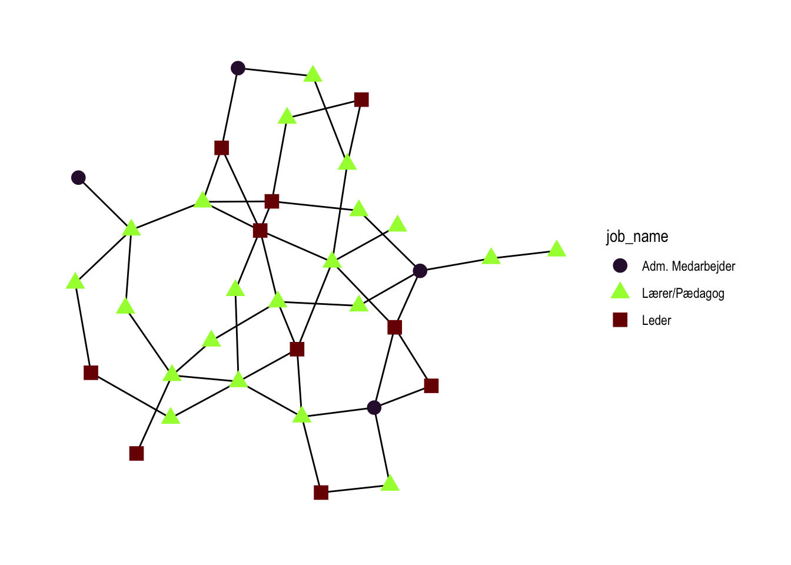
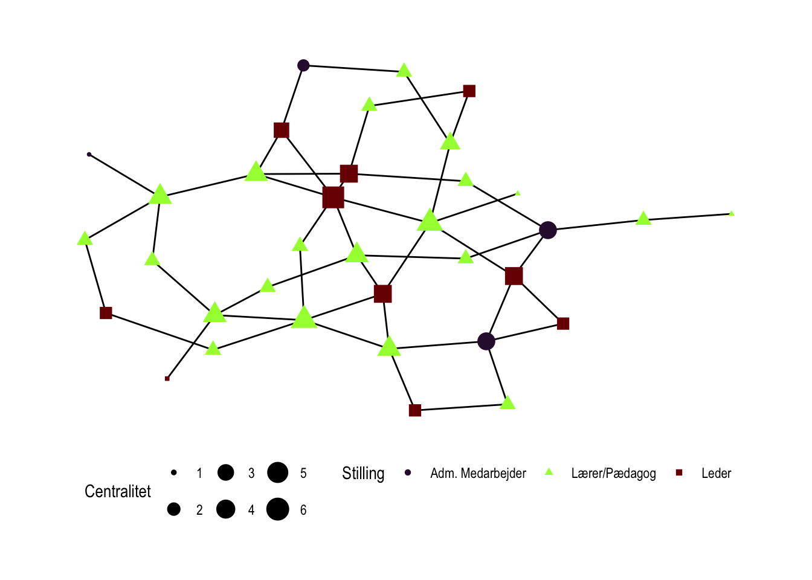

library(tidyverse)
library(tidygraph)
library(ggraph)Lektion 3
I har lavet i forvejen løst opgaven: - ”Find papir og pen frem og tegn netværket, som I forestiller jer det så ud 1 måned efter sammenlægningen. Visualiser nodernes forskellige organisatoriske roller (lærer/pædagog, medarbejder/leder, osv.). For at gøre tegneopgaven overskuelig, kan I tage udgangspunkt i, at organisationerne havde få ansatte.”
Nu skal I løse opgaverne: - Lav en edgelist i excel, pba. af jeres netværk. - Lav en nodelist i excel. Bestem nodernes organisatoriske roller. - Importer excel-filerne til R, og dan en graf ud af dem. - Beregn 3 centralitetsmål for noderne. - Visualiser netværket. Lad nodestørrelse være bestemt af centralitet og lad farve/form være bestemt af organisatorisk rolle.
Lav edge- og nodelist i excelark
Først indlæser vi alle de nødvendige pakker
Jeg importerer de to filer med {readxl}.
e <- readxl::read_excel("Lektion 3/edgelist.xlsx")
n <- readxl::read_excel("Lektion 3/nodelist.xlsx")Så kan vi inspicere de to datasæt
head(e, 2)# A tibble: 2 × 2
from to
<dbl> <dbl>
1 1 21
2 2 1head(n, 2)# A tibble: 2 × 5
id job job_name origin origin_name
<dbl> <dbl> <chr> <dbl> <chr>
1 1 3 Leder 1 Skræddermarkens Skole
2 2 4 Adm. Medarbejder 3 Søndermarkens Integrerede InstitutionDan graf med noder og kanter
network <- tbl_graph(
nodes = n,
edges = e,
directed = FALSE
)Jeg tegner hurtigt netværket for at se, hvordan det ser ud.
network |>
ggraph(layout = "stress") +
geom_edge_link() +
geom_node_point(aes(color = job_name, shape = job_name), size = 4) +
scale_color_viridis(
discrete = TRUE,
option = "turbo"
) +
theme_graph()
Beregn 3 centralitetsmål for noderne
Jeg udvælger:
- Degree centralitet
- Betweenness centralitet
- Closeness centralitet
Degree centralitet
network <- network |>
mutate(degree = centrality_degree())Betweenness centralitet
network <- network |>
mutate(between = centrality_betweenness())Closeness centralitet
network <- network |>
mutate(closeness = centrality_closeness())network |>
ggraph(layout = "stress") +
geom_edge_link() +
geom_node_point(
aes(
color = job_name,
shape = job_name,
size = degree
),
size = 4) +
scale_color_viridis(discrete = TRUE, option = "turbo") +
theme_graph()